Làng gốm Bàu Trúc là một trong những địa điểm du lịch ở Ninh Thuận hấp dẫn, nổi tiếng với những sản phẩm thủ công tuyệt đẹp và kỹ thuật nung nấu đặc biệt, đỉnh cao, mang đậm bản sắc văn hóa Chăm. Bàu Trúc cũng là một trong những làng gốm cổ nhất Đông Nam Á còn tồn tại cho đến tận bây giờ. Hãy cùng ghé thăm làng gốm Bàu Trúc và khám phá những tuyệt tác “đất nở hoa” nhé!
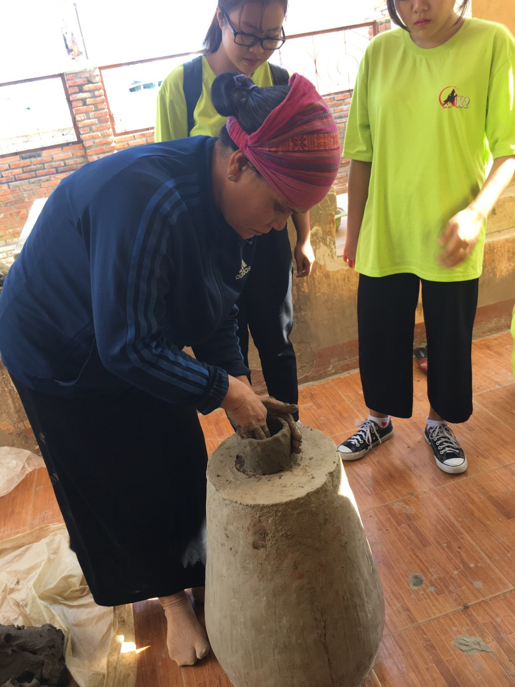
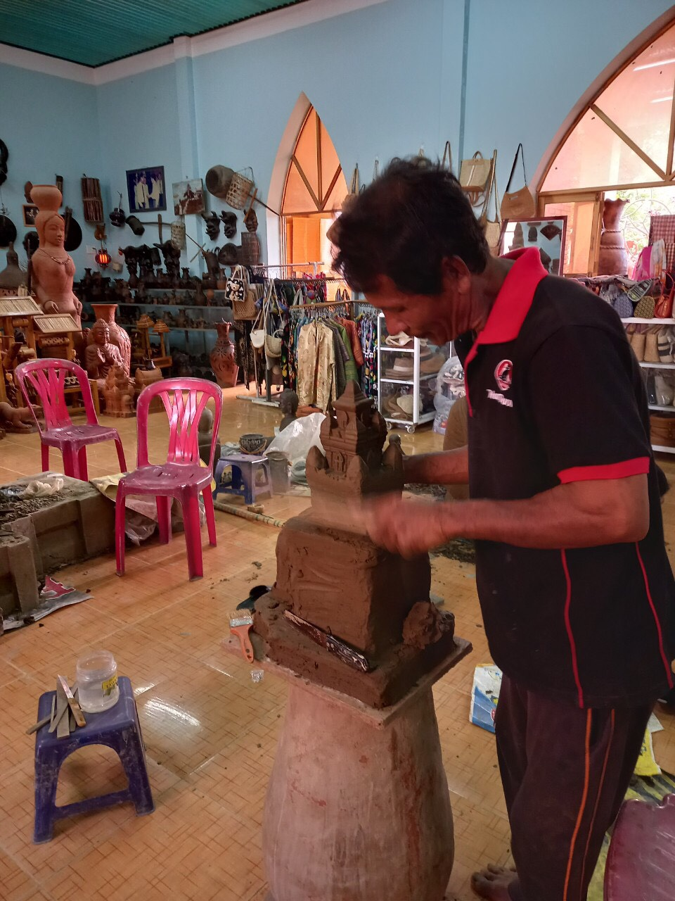
Lịch sử Làng gốm Bàu Trúc
Nằm ở ven quốc lộ 1A, cách thành phố Phan Rang – Tháp Chàm khoảng 10km về phía Nam, Làng gốm bàu Trúc Ninh Thuận thuộc thị trấn Phước Dân, huyện Ninh Phước. Ngôi làng này là một trong số những ngôi làng cổ nhất ở Đông Nam Á. Đồng thời cũng là làng duy nhất làm gốm hoàn toàn bằng tay. Cùng với làng dệt Mỹ Nghiệp, làng gốm Chăm Bàu Trúc cùng nằm trong chương trình bảo tồn và phát triển làng nghề truyền thống của người Chăm trở thành điểm du lịch Ninh Thuận đáng khám phá.
Làng gốm Bàu Trúc là một trong những làng nghề truyền thống lâu đời ở Ninh Thuận
Ngôi làng Bàu Trúc trước đây có tên gọi theo tiếng Chăm là Paley Hamu Trok, có nghĩa là Ma Tró hay “làng trũng” trong tiếng Việt, xưa là địa danh làng Vĩnh Thuận thời Minh Mạng năm 1832. Vào năm 1964, do một trận lụt lớn mà dân làng phải di dời về vùng đất có nhiều cây trúc bên cạnh một cái ao lớn. Từ đó người dân gọi là làng Bàu Trúc.
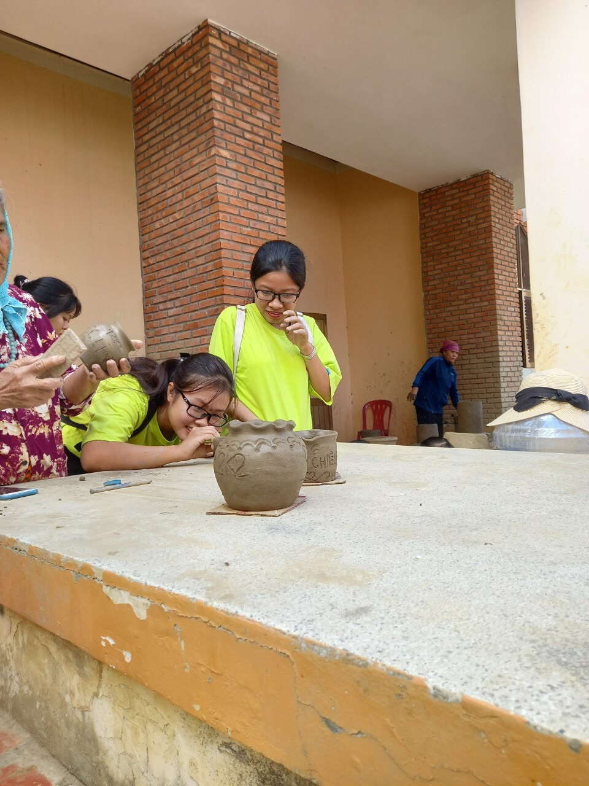
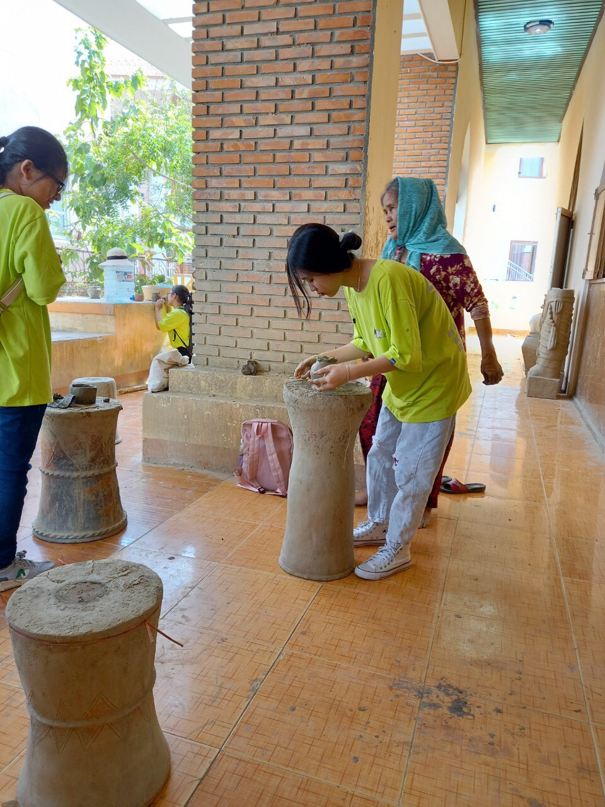
Khám phá làng gốm Bàu Trúc, nơi này có gì thú vị?
Làng gốm Chăm Bàu Trúc có khoảng 400 hộ gia đình. Trong đó có trên 80% hộ gia đình vẫn tiếp tục theo nghề gốm. Ngay giữa trung tâm làng gốm là khu vực trưng bày với rất nhiều chủng loại khác nhau từ bình hoa, ấm nước cho đến nồi niêu, chum vại,… Đặc biệt ở đây có những tháp tượng mô phỏng vũ nữ Apsara độc đáo.
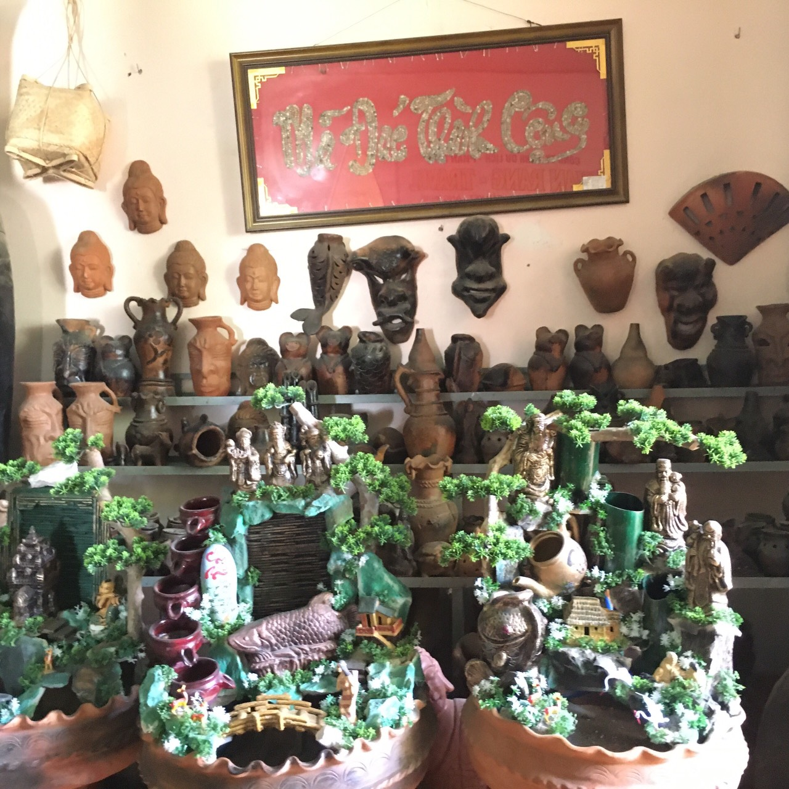
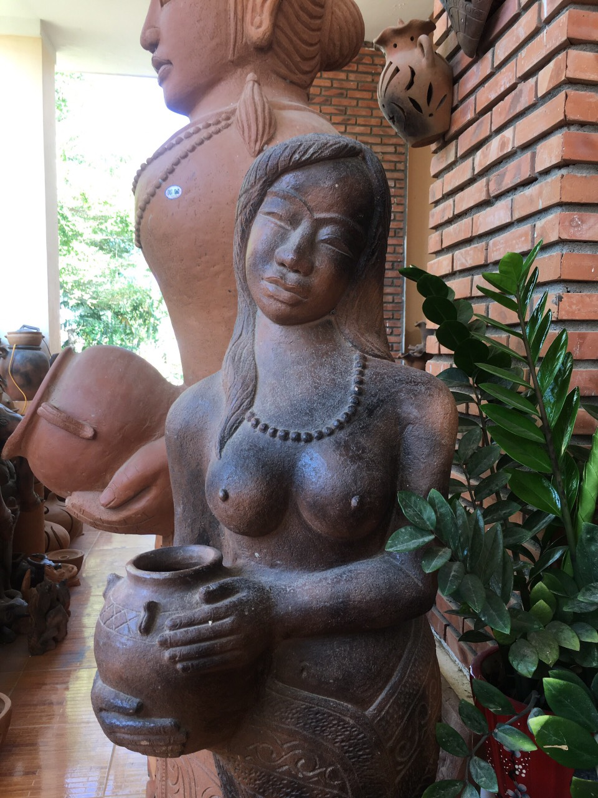
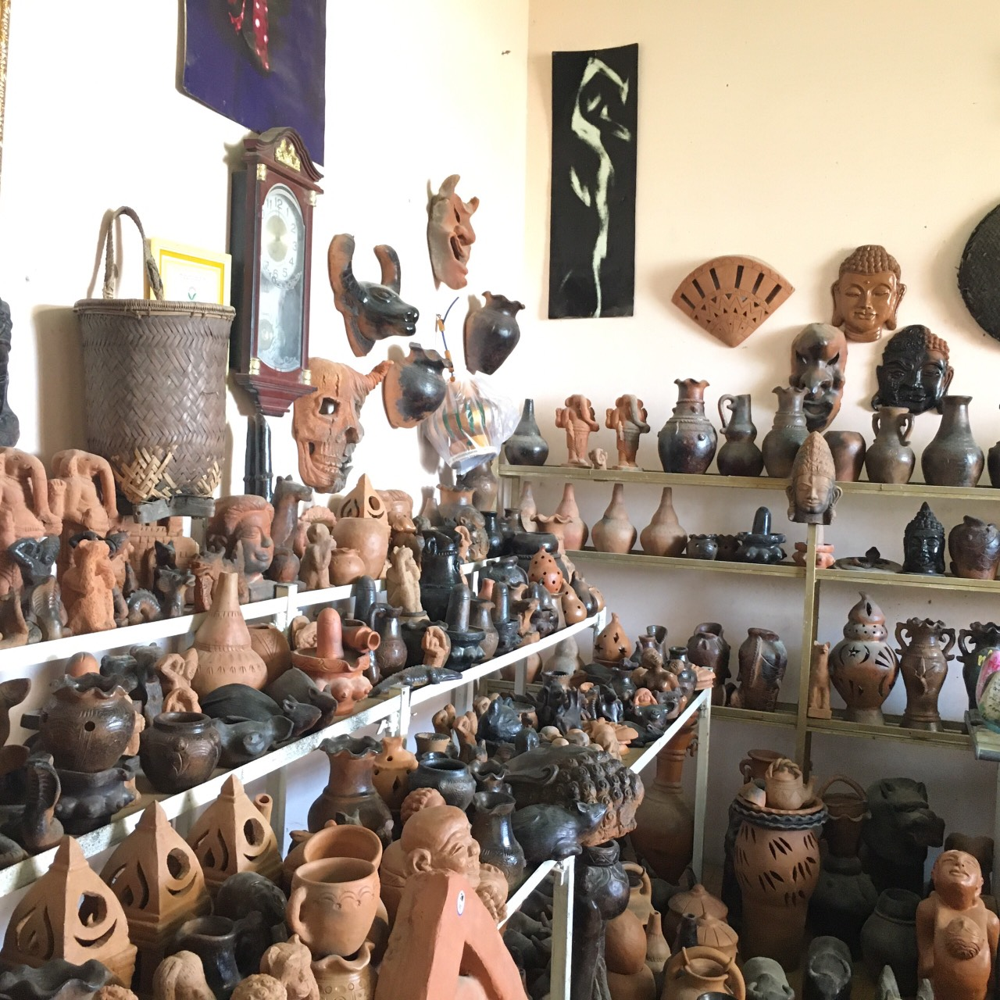
Điểm đặc biệt của nghề làm gốm ở Bàu Trúc đó chính là phương pháp làm gốm thủ công, mang tính nghệ thuật cao với sự tỉ mỉ, tinh tế trong từng nét chạm khắc. Ở nhiều làng nghề, người ta thường dùng các bàn xoay để nặn gốm. Tuy nhiên ở đây, các nghệ nhân gốm dùng chính đôi tay khéo léo của mình để tạo nên những sản phẩm tuyệt vời.
Hoa văn trên gốm Bàu Trúc là những đường chạm khắc mang đậm nét văn hóa Chăm Pa như là những hình sông nước, chấm vỏ sò, hoa văn móng tay,… Gốm Chăm Bàu Trúc có màu sắc vàng đỏ, đỏ hồng, đen xám xen lẫn những vệt nâu đặc trưng, có tính “độc bản”. Các sản phẩm luôn có sự khác biệt riêng bởi mỗi sản phẩm tạo ra nó có cái hồn riêng lưu lại từ quá trình nung đất cho đến những nét hoa văn. Đó chính là yếu tố quan trọng trong nghề làm gốm của người Chăm từ xưa cho đến bây giờ và mai sau.
Đến tham quan làng gốm Bàu Trúc các bạn còn được theo dõi các nghệ nhân nắn, tạo hình gốm với những đôi bàn tay tài hoa, điêu luyện cùng những thao tác kỹ thuật vô cùng đẹp mắt. Ngoài ra, các bạn cũng có thể được trải nghiệm tự tay làm cho mình những chiếc bình hay cốc gốm, vẽ hoa văn và nung lửa như một nghệ nhân gốm thực sự. Những sản phẩm gốm đáng yêu do chính tay mình làm chính là đặc sản Bàu Trúc làm quà ý nghĩa nhất cho người thân và bạn bè.
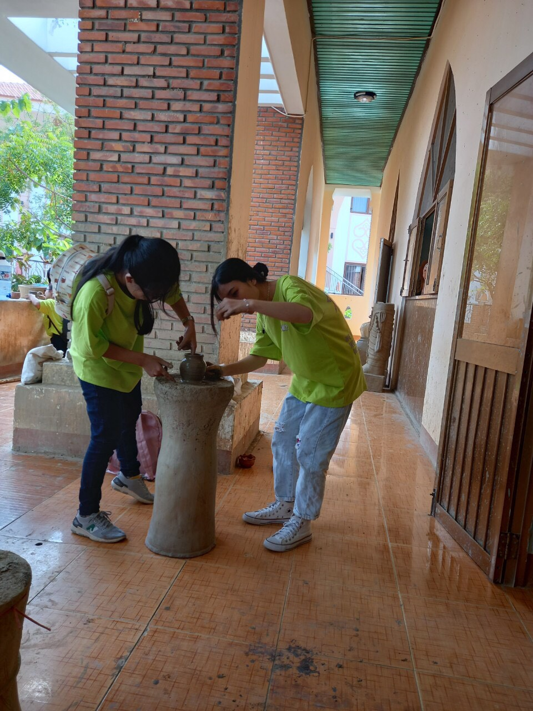
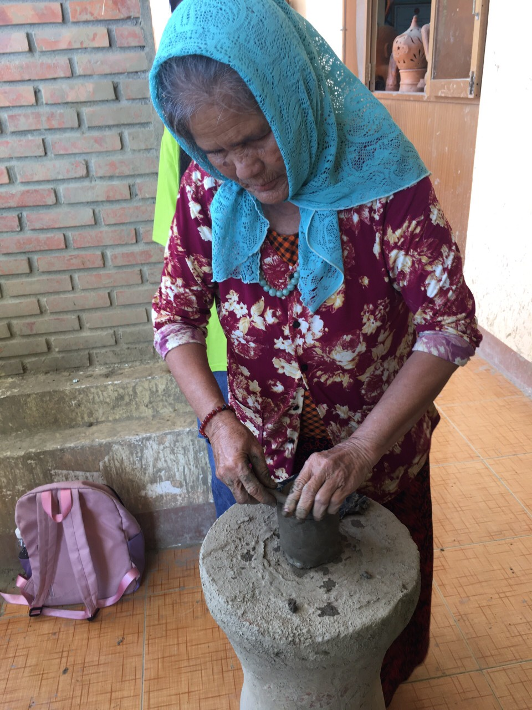
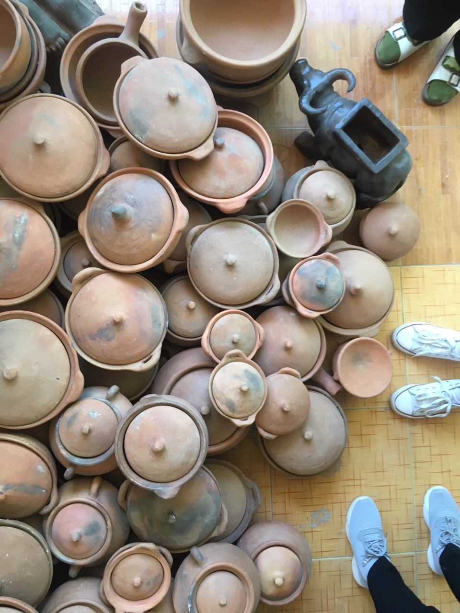
Hướng Dẫn chỉ đường:
Làng dệt thổ cẩm Mỹ Nghiệp
Cài nét về lich sử hình thành.
Làng dệ Mỹ Nghiệp toạ lạc tại thi trấn Phước Dân, huyện Ninh Phước tỉnh Ninh Thuận, nằm cách tp PRTC 10km hướng theo quốc lộ 1A.
Làng dệ thổ cẩm Mỹ Nghiêp đã có từ rất lâu đời. Theo lời kêt, từ thế kỉ 17, bà Ponargar đã đặt chân đến đây và thấy nơi đây thích hợp trồng bông lấy tơ dệt vải. Vì thế bà đã truyền nghề cho 2 vợ chồng ở làng Chaleng(Mỹ Nghiệp ngày nay). Từ đó nghề dệt vải trở thành truyền thống từ đời này qua đời khác.
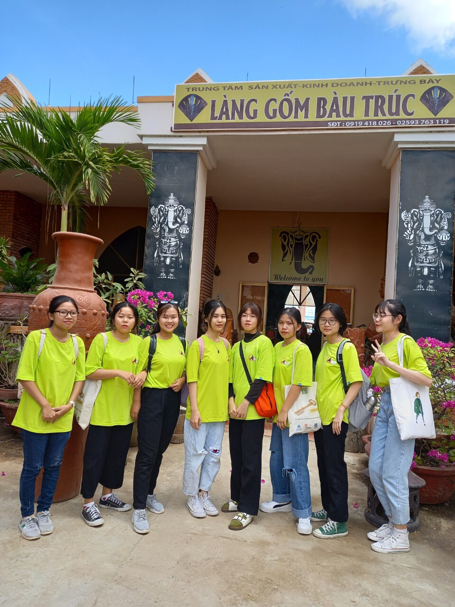
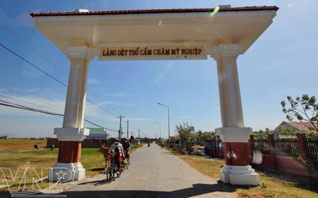
Bạn được trải nghiệm gì khi đến làng dệt Mỹ Nghiệp
Khi đến thăm làng dệt Mỹ Nghiệp, bạn sẽ được tận mắt chứng kiến quá trình dệt thổ cẩm với các loại chất liệu khác nhau, các sản phẩm đa dạng.
Bạn được tận tay chạm vào ướm thử những tấm vải mềm min đặc trưng của làng dệt với những hoa văn cổ như đèn Siva , Rồng trời,... cới sự tài hoa, chuyên nhhieepj và khéo léo của những người thợ dệt nơi đây, bạn sẽ được thấy họ dệt điêu luyện đến mức nào.
Đặc biệt, khi đến đây bạn có thể trải nghiệm hoá thân thành các chàng trai, cô gái Chăm, tận tay thử dệt vải, đạp vải, kèo tơ theo tùng nhịp điệu... điều này có thể khiến bạn say mê quên giờ giâcd với những mảnh cải kì diệu ấy.
Qua đó, bạn sẽ hiểu sâu sắc hơn về một dân tộc đã tồn tại và phát triển hưng thịnh mà có thể chỉ khi mắt thấy tai nghe bạn mới trần trồ về những làng nghề cuốn hút đến thế.
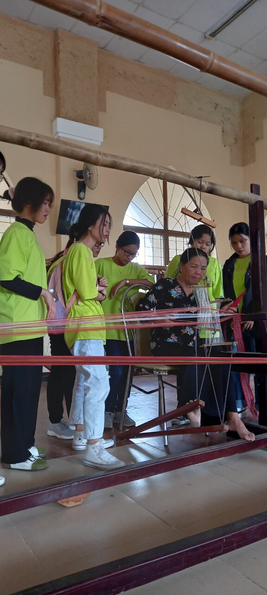
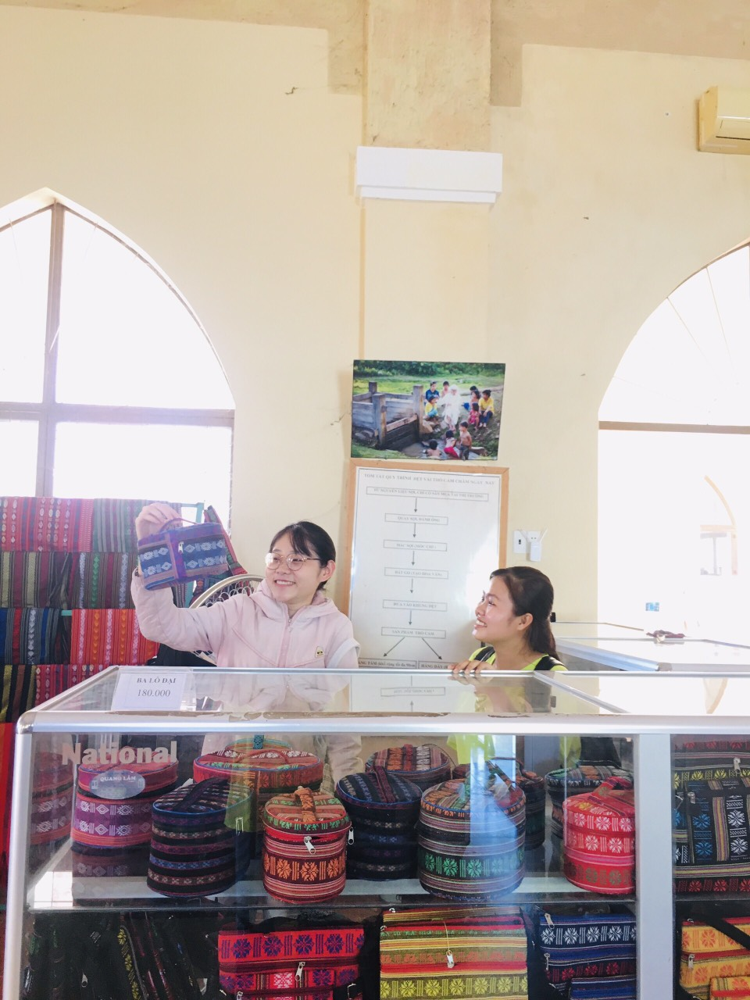
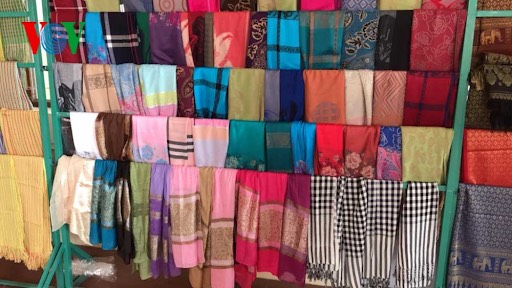
Sản phẩm của làng dệt truyền thống Chăm Mỹ Nghiệp có sức hấp dẫn không chỉ vì hoa văn đặc sắc , độc đáo mà còn là mẫu mã đa dạng, phong phú. Đến đây bạn có thể tha hồ lựa chọn những món quà lưu niệm đẹp mắt như khăn, những tấm áo, hay những chiếc túi, ví,... để mang về làm quà cho gia đình bạn bè.
Chắc chắn rằng bạn sẽ có những trải nghiệm tuyện vời có 1 không 2 khi đến đây. Cùng thử xem, bạn nhé!